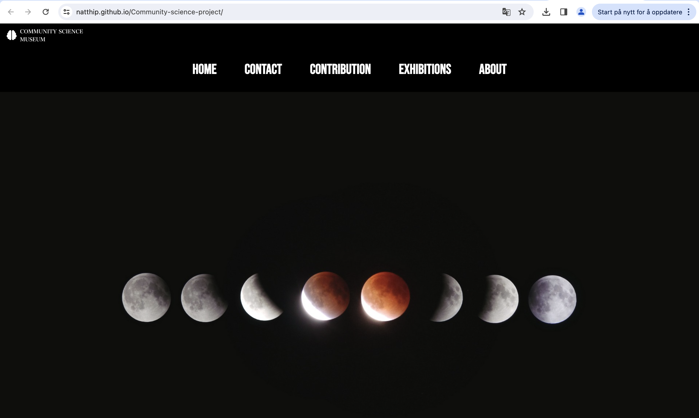
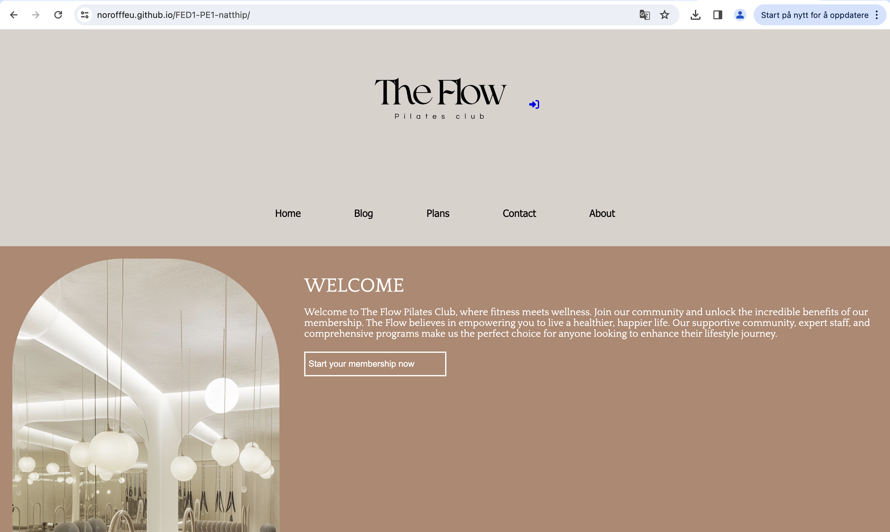

The RainyDays
The RainyDays Project is my first project built with a focus on semantic HTML, well-structured CSS, and ensuring both responsiveness and accessibility
Github Repo Live site

Community Science
Community Science Project is my second project built with a focus on semantic HTML, well-structured CSS, and ensuring both responsiveness and accessibility
Github Repo Live site

The Flow
The Flow is my Exam Brief for Noroff its built with a focus on semantic HTML, well-structured CSS, some javascript and ensuring both responsiveness and accessibility
Github Repo Live site